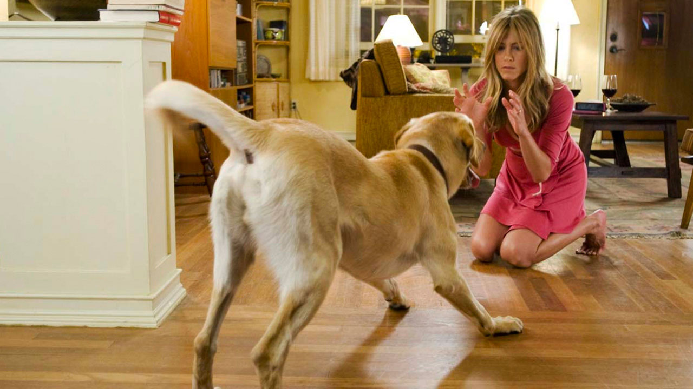

Frammenti di Vita



2008 — 2021
Questo spazio è dedicato a Marley, il nostro "uragano di luce". Non è un sito di addio, ma un invito a sorridere ricordando la vita straordinaria di un cane che ha ridefinito il concetto di famiglia.
Arrivato come un piccolo batuffolo giallo, Marley ha iniziato la sua carriera di "distruttore di mobili" nel giro di 15 minuti. Quel giorno abbiamo capito che la nostra vita non sarebbe stata più la stessa.
Sulle Dolomiti, Marley ha scoperto la neve. Ha provato a "scavare" l'intera montagna alla ricerca di chissà quale tesoro, finendo per diventare un pupazzo di neve vivente.
Quando è arrivato il piccolo di casa, Marley ha smesso di essere un uragano per diventare un custode silenzioso. Dormiva sempre sotto la culla, vegliando su ogni respiro.
Un piccolo gesto per tenere viva la luce del suo ricordo.
"Un cane non se ne fa niente di macchine costose... Un bastone marcio è sufficiente."
In onore di Marley, puoi sostenere chi ancora è in cerca di una casa.
Sostieni il Canile Locale (Demo)